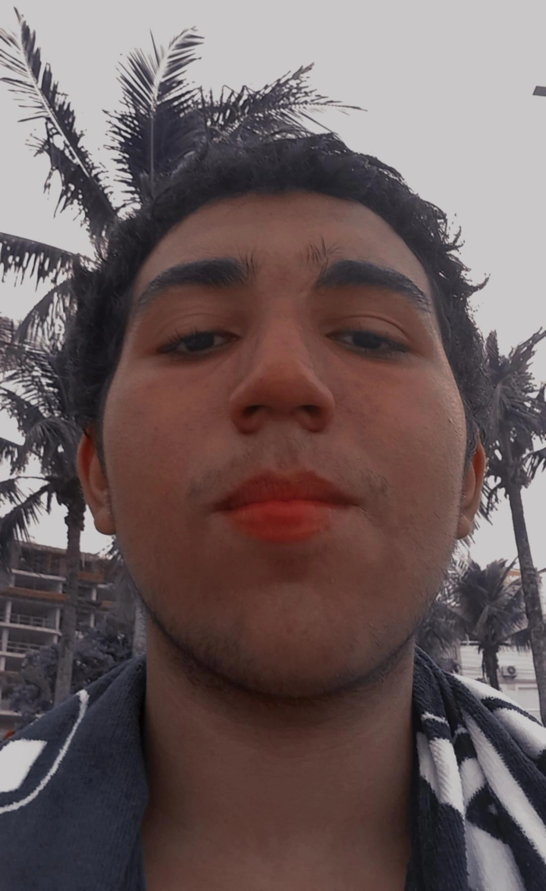
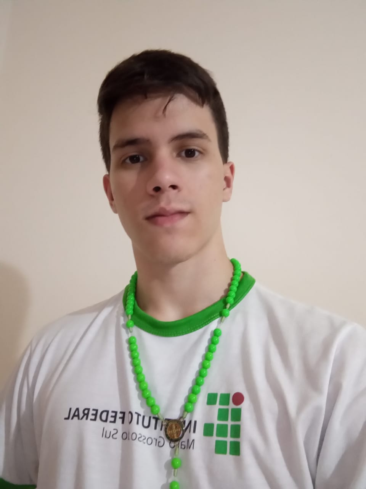
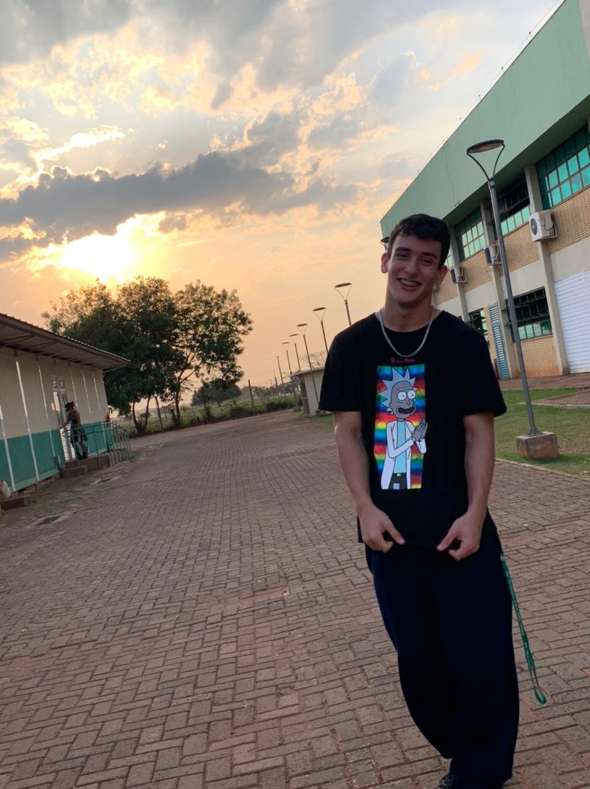
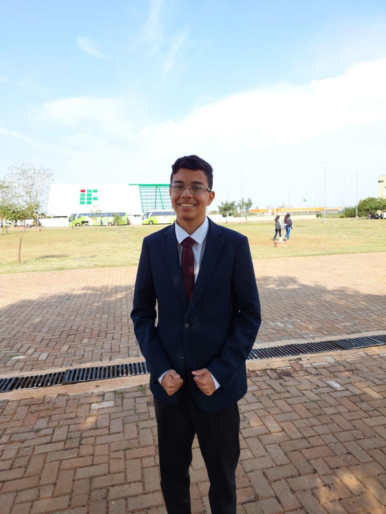

Diário de Bordo
Diário de Bordo
Cuidado para não se encantar de mais com esta bela equipe

Estudante de Informática
Nerd de carteirinha
17 anos
Enfim, existem pessoas que só pensam em assistir séries, filmes de super-heróis e dormir... Eu sou uma delas, mas eu também gosto muito de ouvir música, tocar guitarra e de ficar passando trote pro povo que fica me ligando de São Paulo. Às
vezes tenho esperança de ser o próprio time de São Paulo querendo me contratar, fazer o que, dizem que o futuro é moldado pelos seus sonhos, então por isso que eu gosto muito de dormir. Sobre minha aparência: como vocês podem ver, minha
beleza é tão interior que daqui a pouco ela se muda para um sítio.
Estudante de Informática
ENFP em pessoa
17 anos
E aí, tudo certo? Prazer, Felipe. Esse textinho é meio curto comparado com o quão incrível eu sou, rsrs. Mas enfim,
resumindo essa obra de arte, eu tenho uma grande paixão pela natureza e a arte e o que elas têm a oferecer na sua forma
mais pura e expressiva. Gosto muito de viajar, conversar com as pessoas, e eu tenho um ótimo dedo pra estética.


Estudante de Informática
Cozinheiro do Master Chefe
17 anos
Estudante do IFMS desde 2020, Bernardo Sávio Marques Damacena Fernandez é aluno de 6° semestre do Curso Técnico em Informática. Nascido em Campo Grande, costuma escrever poemas nas horas vagas, além de apreciar música, literatura, culinária e musculação.
Estudante de Informática
Tocador de vôlei
17 anos
Eu gosto de praticar esportes, como futebol e vôlei. Já participei do time do IF e já fiz um curso de primeiros-socorros.
Escuto mais rap, sempre uso boné.
Estudante de Informática
Embaixdora da NASA
17 anos
Meu nome é Sara, tenho 17 anos e sou estudante do IFMS - campus Campo Grando. Faço o curso de Técnico em Informática, mas a área que pretendo seguir mesmo, é astronomia. Os meus principais hobbies são, escutar músicas e estudar coisas sobre o espaço.
Estudante de Informática
Calistenia na veia
17 anos
Se for pra falar de gostos você vai ler um textão, porém quanto a matemática gosto muito, pois quando passamos a compreendê-la obtemos uma visão diferenciada do mundo e do funcionamento das coisas ao nosso redor. Espero que goste do nosso trabalho.


Estudante de Informática
Dono da Universal
17 anos
Entusiasta da história, adoro aprender sobre todos os conflitos da humanidade, e perceber como a matemática tem grande influência em seus desfechos.
created with
HTML Designer .